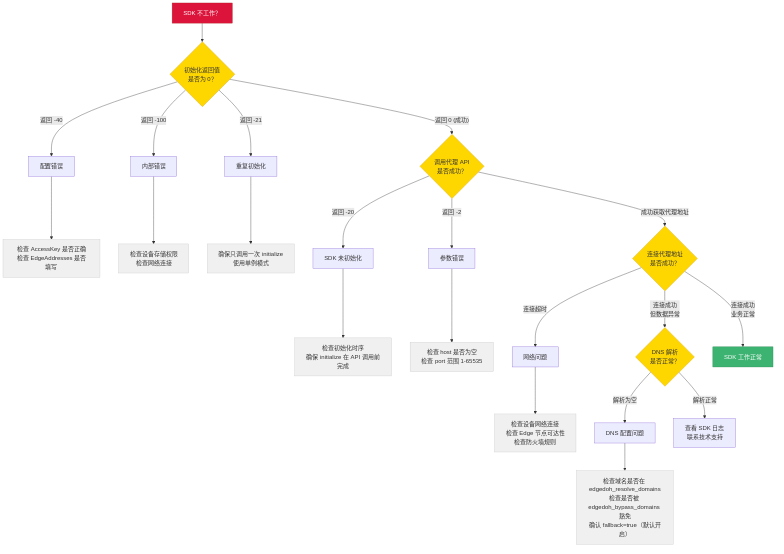

错误处理与排障指南¶
受众: 应用开发者 前置阅读: 接入指南
目录¶
错误码完整定义见 参考 / 错误码。
1. 排障流程¶
遇到 SDK 问题时，按以下流程排查：

快速排查步骤：
- 检查初始化返回值：
initialize是否返回0？ - 检查 API 返回值：
getLocalHTTPProxy/getLocalSocks5Proxy是否返回有效结果？ - 检查网络连接：设备是否能访问 Edge 节点？
- 检查 DNS 配置：
EdgeDohResolveDomains/EdgeDohBypassDomains配置是否符合预期？ - 查看 SDK 日志：日志中通常包含详细的错误原因
2. 常见问题排查¶
2.1 初始化失败¶
AccessKey / edgeNodes 类（-112 / -113 / -114 / -115）¶
现象：initialize 返回 -112 ~ -115
排查：
- -112 AccessKeyIDMissing：配置里 accessKeyId 没填或填了空字符串
- -113 AccessKeySecretMissing：accessKeySecret 没填或填了空字符串
- -114 AccessKeyInvalid：值填了但解析失败 —— 可能复制时漏了字符、加了空白、用错了凭证；从控制台重新复制
- -115 EdgeAddressEmpty：edgeNodes 是空数组或全是空字符串；至少配置一个有效地址
配置 JSON 错误（-111 InvalidConfig）¶
现象：initialize 返回 -111
排查： - JSON 格式错误（多余逗号、缺少引号、类型不匹配等） - 字段类型与 参考 / 初始化参数 定义不符
内部错误（-50 Internal）¶
现象：initialize 返回 -50
排查：
- Android：检查应用是否有存储权限，filesDir 是否可写
- iOS：检查应用沙箱目录是否可访问
- 检查设备 keystore / keychain 是否可用
重复初始化（-102 AlreadyInitialized）¶
现象：initialize 返回 -102
排查：
- 确认 initialize 只被调用了一次
- Android 中注意 Application.onCreate 可能在多进程下被调用多次，需做进程判断
重要：初始化失败后，SDK 会缓存错误，再次调用不会重试。必须重启应用进程后重新初始化。
2.2 代理连接问题¶
获取代理地址失败¶
现象：getLocalHTTPProxy / getLocalSocks5Proxy 返回 null 或负数错误码
排查：
- -101 NotInitialized：SDK 未初始化，检查初始化时序
- -301 ProxyListenerUnavailable：代理 listener 通用故障（含 iOS 后台 socket 重建失败），尝试重启 SDK
- -311 ProxyAddrInUse：端口被占用，三层重试 + OS-assign 后仍失败 —— 通常是同设备多进程竞争或系统 TIME_WAIT 堆积，重启进程
- -321 ProxyFDExhausted：FD 耗尽，排查应用是否泄漏了文件/连接，必要时调高 ulimit
- -331 ProxyPermissionDenied：监听权限被拒（罕见）—— 沙箱或安全策略限制，反馈给运维
获取代理地址成功，但连接超时¶
排查：
- 确认设备网络正常（能否 ping 通 Edge 地址？）
- 检查 edgeNodes 中的地址是否正确
- 检查是否有防火墙或代理规则阻断了 SDK 到 Edge 的连接
- 尝试配置多个 Edge 地址以启用竞速容灾
2.3 DNS 解析异常¶
解析结果为空¶
排查：
- 确认域名拼写正确
- 检查域名是否命中 EdgeDohResolveDomains（catch-all * / 精确 / *.suffix 通配；注意 *.example.com 不匹配裸域名 example.com，要全覆盖用 *）
- 检查域名是否被 EdgeDohBypassDomains 意外豁免（bypass 优先级高于 resolve）
- 如果走 EdgeDoH 路径，检查 Edge 节点是否可达
- 确认 fallback 默认开启，允许 hedged 兜底到系统 DNS
解析延迟高¶
排查：
- 检查是否配置了 pre_resolve_hosts 预解析常用域名
- 检查 min_cache_ttl 是否过低（建议 ≥ 60 秒）
- 如果命中 EdgeDoH 路径，Edge 节点的网络延迟可能影响解析速度
3. 平台特有问题¶
3.1 Android¶
| 问题 | 原因 | 解决方案 |
|---|---|---|
| 初始化崩溃 | 缺少 INTERNET 或 ACCESS_NETWORK_STATE 权限 |
在 AndroidManifest.xml 中添加权限声明 |
| ProGuard 混淆后异常 | SDK 类被混淆 | 添加 ProGuard 规则保留 com.axsecurity.** |
| 多进程重复初始化 | Application.onCreate 在每个进程都执行 |
判断当前进程，仅在主进程初始化 |
| AAR 找不到 | 依赖配置不正确 | 确认 libs/ 目录下有 .aar 文件，build.gradle 包含 fileTree 依赖 |
ProGuard 规则示例：
3.2 iOS¶
| 问题 | 原因 | 解决方案 |
|---|---|---|
| 链接错误 | 缺少系统库依赖 | 确认链接了 libz.tbd、libc++.tbd、libresolv.tbd、DeviceCheck.framework、CoreTelephony.framework |
| ATS 阻断请求 | App Transport Security 策略 | 对需要代理的域名配置 ATS 例外，或确认使用 HTTPS |
| Bitcode 编译失败 | Framework 不支持 Bitcode | 在 Build Settings 中关闭 Bitcode（Enable Bitcode = NO） |
| 最低版本不满足 | 工程 Deployment Target < iOS 12 | 将最低部署目标设为 iOS 12.0 |
3.3 Flutter¶
| 问题 | 原因 | 解决方案 |
|---|---|---|
PlatformException |
原生层初始化失败 | 检查 Android/iOS 平台的原生配置是否完成 |
MissingPluginException |
插件未正确注册 | 执行 flutter clean && flutter pub get |
| iOS 编译失败 | 缺少系统库 | 在 iOS Runner 工程中链接所需系统库 |
| 热重载后状态丢失 | SDK 在原生层，不受 Dart 热重载影响 | SDK 状态在进程级别保持，热重载不影响 |
4. 最佳实践¶
4.1 初始化¶
- 尽早初始化：在应用启动时立即调用（Android
Application.onCreate/ iOSdidFinishLaunchingWithOptions），为后续 API 调用做好准备 - 只调用一次：使用单例模式或全局标志位，确保
initialize不会被重复调用 - 检查返回值：初始化失败时记录日志，但不要阻断应用启动流程
4.2 Edge 节点配置¶
- 至少配置 2 个地址：启用多节点竞速和容灾
- 混合域名和 IP：域名有更好的灵活性（可通过 DNS 切换后端），IP 在 DNS 不可用时仍可直连
4.3 DNS 配置¶
- 生产环境开启 fallback：
fallback: true（默认开启），确保 EdgeDoH 不可达时仍有 hedged 系统 DNS 兜底 - 过期缓存兜底：
enable_expired_ip默认已开启，网络抖动时使用过期缓存 IP 维持服务 - 预解析关键域名：将首屏需要访问的域名加入
pre_resolve_hosts - 业务域名启用 EdgeDoH：把需要防劫持的域名加入
EdgeDohResolveDomains（注意：默认不启用，需显式配置） - 特殊域名豁免：登录域名等需保持系统 DNS 行为的，加入
EdgeDohBypassDomains（bypass 优先于 resolve）
4.4 错误处理¶
- 不要 crash：SDK API 返回错误时应降级处理，而非让应用崩溃
- 记录日志：记录 SDK 返回的错误码，便于排障
- 重启重试：初始化失败后需重启进程重试，不要在同一进程中反复调用